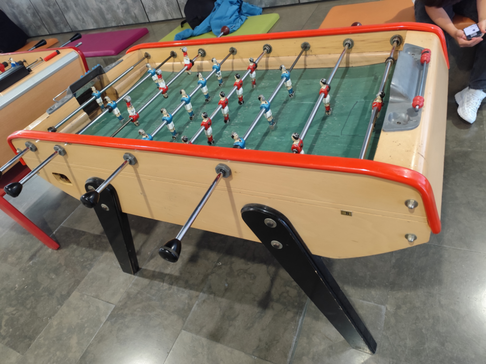
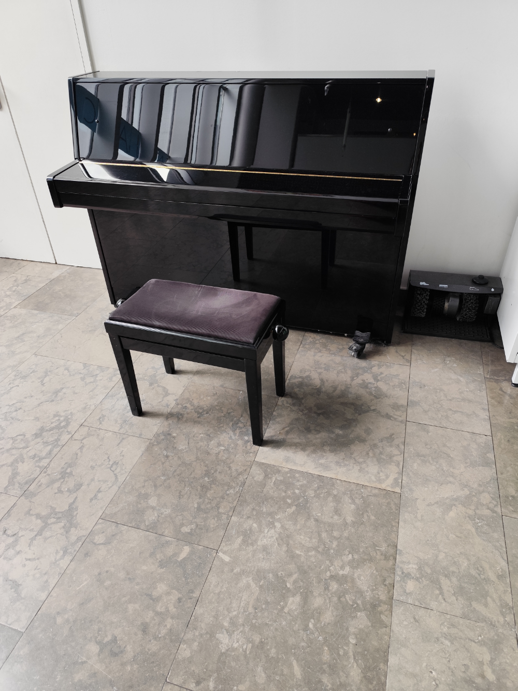
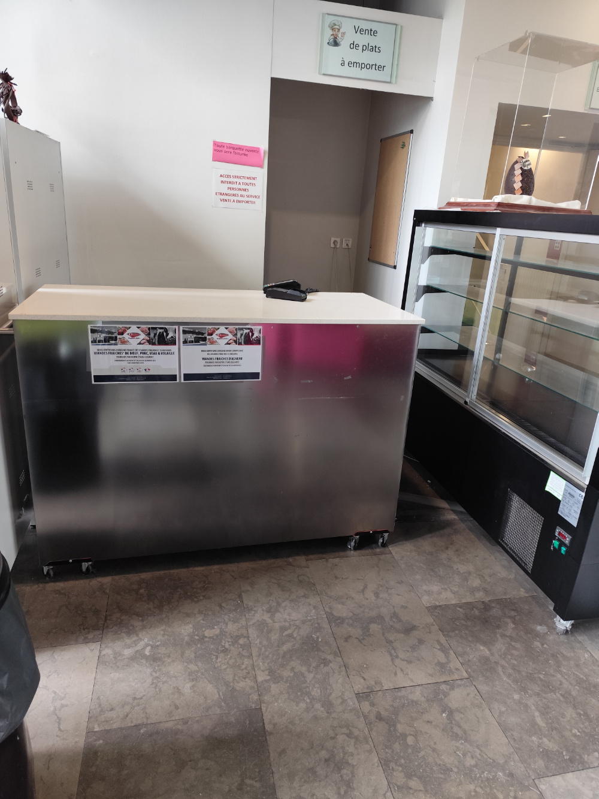
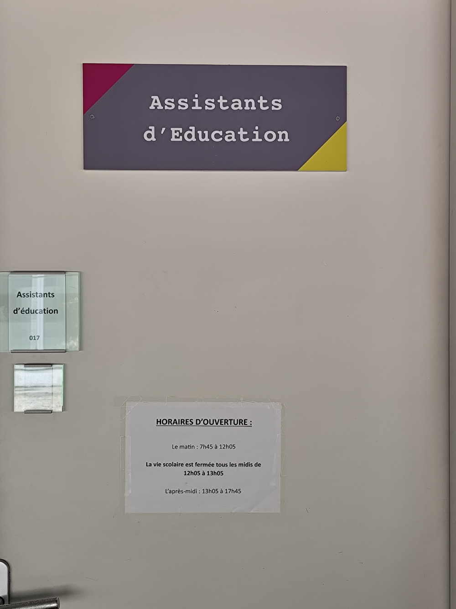
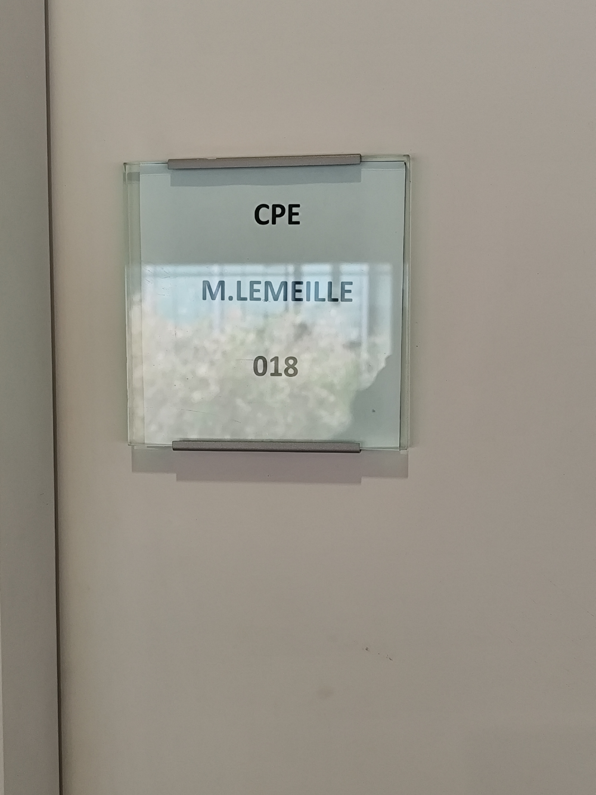
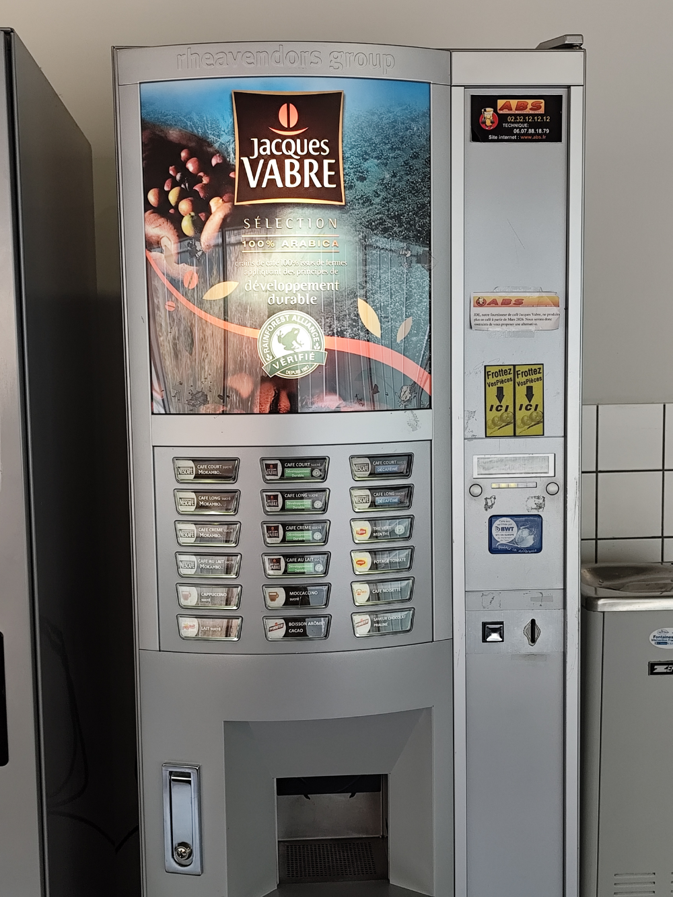
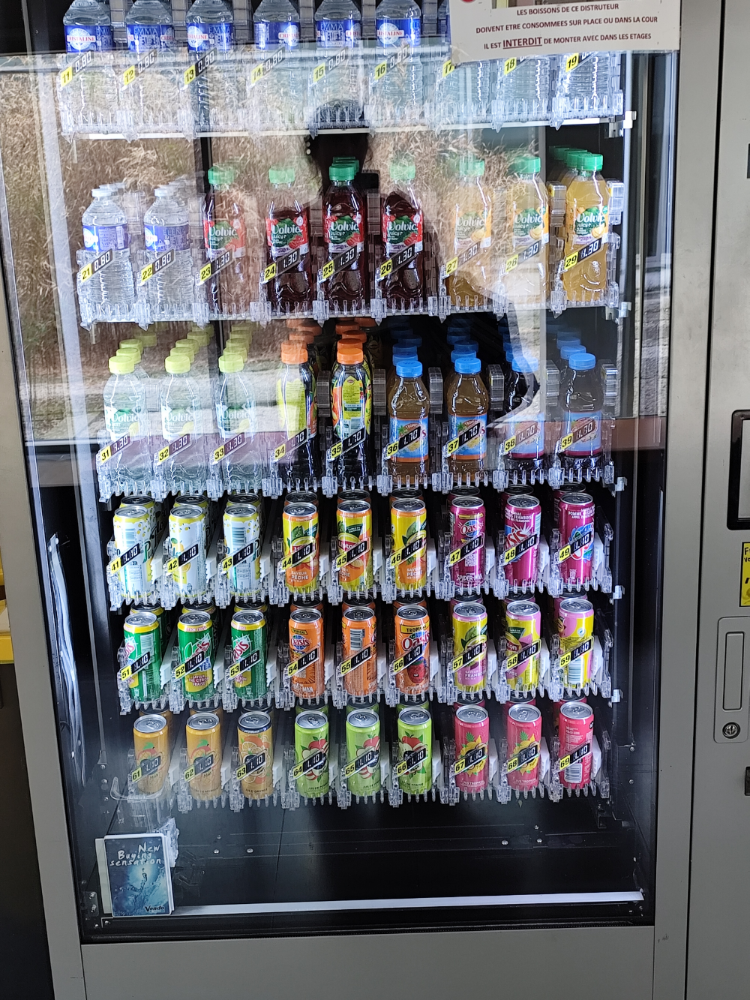
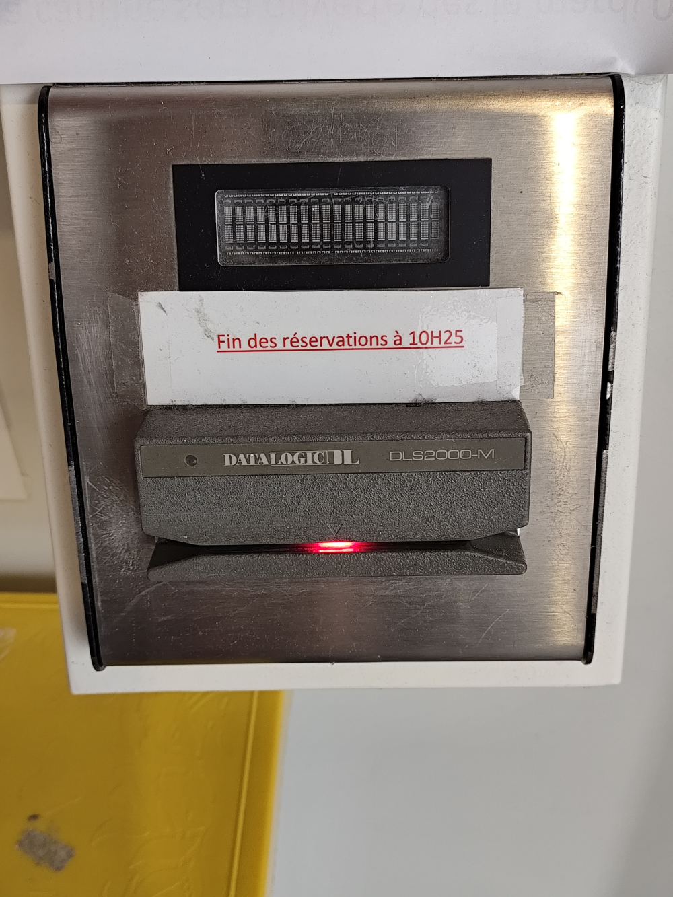
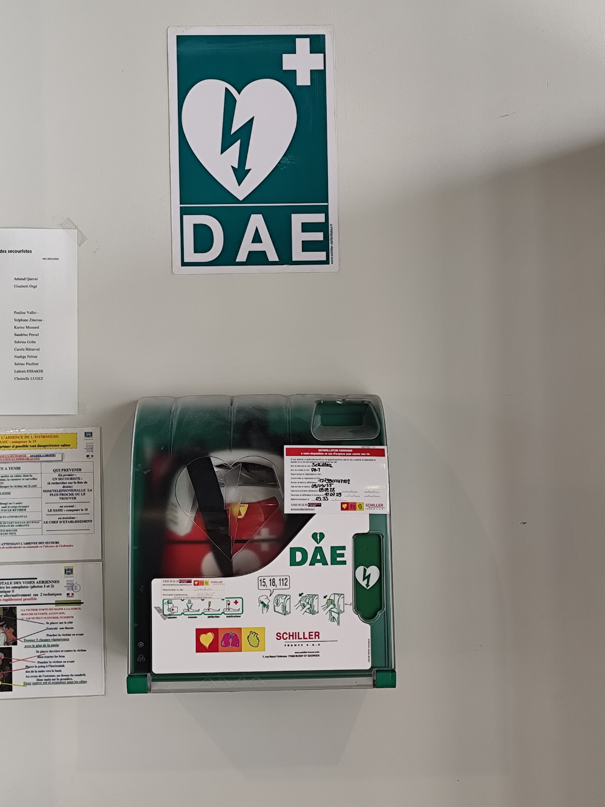

LE LYCÉE
Jour 1 — les lieux et les gens
BONJOUR
COMMENT TU
T'APPELLES ?
T'APPELLES ?
JE M'APPELLE…
LES PRÉNOMS DE LA CLASSE
Anita
Ahmed Samir
Sania
Yasir
Josefina
…
NOM
PRÉNOM
TARAKHEIL
Sania
TARAKHEIL
Yasir
LES ADULTES
DU LYCÉE
DU LYCÉE

Mme HOULLEMARE
proviseur du lycée

M. SEYS
proviseur adjoint

M. LEMEILLE
CPE · salle 018

Mme TROALLIC
professeur · salle 218
LES LIEUX
Le tour des étages

LES TOILETTES

LA CANTINE

L'INFIRMERIE

LE SECRÉTARIAT

LE CDI

LA PERMANENCE
LE COULOIR
LE RALLYE
Le rez-de-chaussée

LE BABY-FOOT

LE PIANO

LES PLATS À EMPORTER

LA VIE SCOLAIRE

LE BUREAU DU CPE

LE CAFÉ

LES BOISSONS

LA BORNE DE LA CANTINE

LE DÉFIBRILLATEUR
LES NEUF ENDROITS


LES PHRASES DU JOUR
Bonjour.
Comment tu t'appelles ?
Je m'appelle…
Où sont les toilettes ?